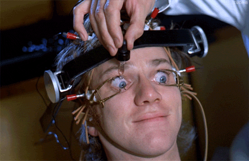
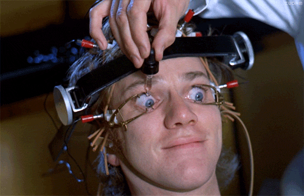

Chaos Macht Schule

Warum sind wir eigentlich hier?
Oder besser...
- Warum seid ihr eigentlich hier?
Warum wir nicht hier sind:
- Wir wollen nichts verbieten!
- Wir wollen nicht alles schlecht reden!
Warum wir hier sind:
- Wir wollen erklären ...
- ... wie Technik funktioniert
- ... und wo die Probleme liegen
- ... und geben Tipps was man besser machen kann
Der Chaosknoten

Das Pesthörnchen
 Der Congress
Der Congress
 Das Hackcenter
Das Hackcenter
 Das Camp
Das Camp
 Das Datenklo
Das Datenklo
 All Colours Are Beautiful
All Colours Are Beautiful
Welche Dienste nutzt ihr im Internet?
Suche
- Google
- Bing
- DuckDuckGo
- Startpage.com
Social Networks
- Instagram
- Facebook
- Google+
- Twitter
- Reddit
Messenger
- Whatsapp
- Facebook Messenger
- iMessage
- Skype
- SnapChat
- Threema
- Signal
E-Mail
- Gmail
- GMX
- T-Online
- Freenet/1&1
- Posteo
News & Information
- Zeitung Print
- Zeitung Online
- YouTube
- Wikipedia
Und wie funktioniert dieses Internet?
Kommunikation im Netz
- Wir senden und empfangen Pakete
- Mit Empfänger und Absender
- Die Inhalte sind über mehrere Pakete verteilt
Services von Google
- Google Suche
- YouTube
- Google+
- Android mit Google Play
- GMail
- Google Cache
Ein Google Rechenzentrum
Wieviel Geld zahlt ihr monatlich an Google?
Google...
- zeigt nicht alle Informationen an
- betreibt SEM - Search Engine Marketing
- macht Geld mit euren Daten
Und was ist hieran schlecht für mich?
Filterblase
- Ergebnisse werden für Dich entfernt
- Die Reihenfolge für Dich umsortiert
- Du bekommst keine neuen Informationen
- Du bleibst in der Blase die Google für Dich baut
Search Engine Marketing (SEM)
- Die ersten 3 Ergebnisse bestehen aus Werbung
- Google "zwingt" Firmen hier mitzumachen
Datenschutz
- Google erstellt immer ein Profil über Dich
- auch wenn Du nicht angemeldet bist
- und kombiniert die Daten aus Google Suche, Google Play, Google+ und Youtube
- Ist es nicht toll? Wir müssen nichts für den Stall bezahlen.
- Ja! Und sogar das Futter ist gratis!

Startpage.com
Startpage verwendet die Google Suche im Hintergrund, ohne Benutzer der Filterblase auszusetzen
DuckDuckGo bietet noch zusätzliche interessante Funktionen
- !wde Begriff sucht auf Wikipedia
- !g Begriff sucht mit Google
- !abfahrt Haltestelle zeigt dir die Abfahrtszeiten
- Kann man auf iOS und Mac als Standardsuchmaschine auswählen.
Was gehört alles zu Facebook?
- Whatsapp
- Instagramm
- Oculus VR
Datenschutz bei Facebook
- Einstellungen zum Datenschutz ändern sich oft
- Sinnvolle Einstellungen können durch Facebook ungefragt geändert werden
Facebook hat für eine Studie die Auswahl der Einträge im Nachrichtenstrom von einigen Hunderttausend Nutzern manipuliert. Bei dem Experiment vor eineinhalb Jahren sollte erforscht werden, wie sich positive und negative Emotionen in Netzwerken ausbreiten
Facebook speichert
- Posts
- Unterhaltungen
- welche Seiten ihr besucht
- wo ihr seid
- Nachrichten, die ihr nicht abschickt
- für immer.
Risiko
Daten werden von unerwünschten Dritten eingesehen.


Datenschutz bei Oculus VR
Nutzer, die mit Hilfe der Rift Inhalte oder Werke produzieren und den Nutzungsbedingungen zustimmen, überlassen Oculus Rechte daran. Oculus kann diese Inhalte nutzen, ohne den Urheber dafür entlohnen zu müssen
Zudem kann Oculus sämtliche Daten sammeln, die bei der Interaktionen eines Nutzers mit den Diensten des Unternehmens anfallen. Das können Informationen über Spiele, Inhalte, Apps und Cookies sein sowie über die verwendeten Geräte, Web-Browser, Betriebssystem und die IP-Adresse.
Whatsapp
- Hatte anfänglich riesige Sicherheitslücken
- Ist Teil von Facebook
- Hat seit neustem E2E Verschlüsslung eingeführt
Was ist Ende-zu-Ende Verschlüsselung?
- Sender und Empfänger tauschen geheime Schlüssel aus
- Alle vermittelten Stellen können ohne Schlüssel nur Metadaten sehen
Ist Whatsapp jetzt sicher?
- Die Einführung von E2E Verschlüsselung ist gut
- Die verwendete Methode ist nach vorliegender Dokumentation sehr sicher
... ABER ...
- Der Quellcode ist nicht öffentlich
- Über ein Update könnte Facebook die geheimen Schlüssel kopieren
- Facebook ist ein amerikanisches Unternehemen und an US Gesetze gebunden
Was sind dann Alternativen?
2 Messenger als Beispiel
Signal
Gut:
- Sehr gute Verschlüsslung
- Kein Teil von Facebook
- Quelloffene Variante existiert
- Auch kostenlos
Signal
Schlecht:
- Verwendet auch Handynummer als Identifier
Threema
Gut:
- Gute Verschlüsslungsbibliothek
- Unternehmen ist in der Schweiz
- Keine personenbezogenen Daten
- Kauf ohne PlayStore (bitcoin)
- Seitenkanal Authentisierung
Threema
Schlecht:
- Nicht kostenlos
- Nicht OpenSource
- Nicht gemeinnützig
Und was mache ich gegen Tracking?
Content Blocker
- Ghostery
- uBlock
- Flash deinstallieren/verbieten
Weitere Maßnahmen
- "do-not-track" Einstellung
- Private-Browsing
Informationelle Selbstbestimmung
Das Recht auf informationelle Selbstbestimmung ist im bundesdeutschen Recht das Recht des Einzelnen, grundsätzlich selbst über die Preisgabe und Verwendung seiner personenbezogenen Daten zu bestimmen.
Es handelt sich dabei nach der Rechtsprechung des Bundesverfassungsgerichts um ein Datenschutz-Grundrecht, das im Grundgesetz für die Bundesrepublik Deutschland nicht ausdrücklich erwähnt wird.
Informationelle Selbstbestimmung
- Jeder entscheidet selbst, welche Daten er preisgeben möchte
- Das ist ein Grundrecht
Darum fragt um Erlaubnis bevor ihr
- ...Texte über andere veröffentlicht
- ...Fotos von anderen hochladet
- ...Personen auf Fotos taggt
Das Internet vergisst nichts!
Google, Facebook, etc. finanzieren sich fast ausschließlich über Werbung. Daher
- ...wollen wir sehen, wie Werbung funktioniert
- ...wie Werbung finanziert wird
- ...wie das Internet die Werbung verändert

Auch schon ohne Internet hat die Werbe-Industrie sehr viel über uns Konsumenten gewusst!


 

SmartHome
- Barbie
- Smart TV
- Kühlschrank
- Smartmeter
Wearables
- Smartwatches
- Fitness Tracker
- Kopfhörer
Big Data
Vom Kleinen zum Grossen
Big Data
Verknüpfung persönlicher Daten vieler ...
- ... mit denen anderer Nutzer
- ... mit aktuellen Geschehnissen
- ... mit denen von Drittanbietern
Big Data
Wofür macht man das?
Zum Aufstellen von Voraussagen. Voraussagen ...
- ... über die Stimmung der Nutzer
- ... über das Verhalten der Nutzer
- ... was man Nutzern gerade Schmackhaft machen kann
Sponsored Content
Getarnte Werbung
Sponsored Content
Was ist das?
- Beiträge, die auf offiziellen Kanälen veröffentlicht werden
- Aussehen wie Beiträge dieses Kanals
- Aber in Auftrag gegebene Werbung sind
Sponsored Content
Wie ist das möglich?
- Big Data hilft Nutzerwünsche zu formen
- Unerkannte Werbung funktioniert besser
- Werbung passt sich an Nutzer an
Sponsored Content
Werbung durch die ich mich wohl fühle? Super, oder?
- Ziel ist Konsum, nicht Wohlergehen
- Information wird nicht kritisch beleuchtet
- Scheinbare Realität angepasst an Marktbeduerfnisse
Cybermobbing
- Mit dem Betroffenen reden
- Mit den Verursachern reden
- Mit den Eltern reden
- Mit der Schule reden
- Mit dem Betreiber reden
- Mit der Polizei reden
Klicksafe.de
Auf www.klicksafe.de findet ihr Material zu:
- Cybermobbing
- Datenschutz
- Internet Recht
- Ethik
- Filesharing
Mehr Informationen findet ihr auf
https://muc.ccc.de